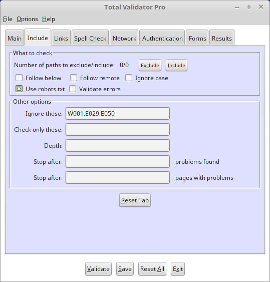

Introduction
All of the options that appear on the Include tab of the Pro tool are described below.

 top
topExclude
You may not always wish to check certain parts of your site. This option allows you to exclude parts of the site by specifying one or more paths to ignore.
When you click on the 'Exclude' button a dialog appears to allow you to add, remove, and update a list of paths to exclude.
The paths that you enter here must start with a '/'. Any pages that start with this path will then be ignored. You can use regular expression syntax here, but you must always start with '/' as the first character and note that .* is always automatically added to the end of whatever you enter.
When checking local pages on Windows, always use '/' and not '\'. Also the same drive as the starting page will be automatically added, and all paths will be to the start of this drive.
You can use this option with the Include option to provide further restrictions on what to check. For example you could set a path to exclude of '/' to exclude everything except the starting page, and then use Include to specify exactly which paths should be validated. You can also use the robots.txt option at the same time for further fine-grained selection of what to validate.
Note: When using this with the Follow below option all paths you specify are relative to the starting page.
Include
If you specify some paths to exclude, or use 'Disallow' within your robots.txt file, you may wish to override this to include some paths within these areas of your website that you do wish to check. Note that it only makes sense for these include paths to be 'below' the paths to exclude or 'below' paths disallowed in the robots.txt file.
When you click on the 'Include' button a dialog appears to allow you to add, remove, and update a list of paths to include.
The paths that you enter here must start with a '/' and be more than just a single '/'. You can use regular expression syntax here, but you must always start with '/' as the first character and note that .* is always automatically added to the end of whatever you enter.
For example if you specify an exclude path of /some_path/, and an include path of /some_path/sub_path/ then pages such as http://www.mysite.com/some_path/index.html will be excluded, but pages such as http://www.mysite.com/some_path/sub_path/index.html will be included (as long as you have a link to them from the pages that are validated).
Note: When using this with the Follow below option all paths are relative to the starting page.
Follow below
By default Total Validator will follow all the links it finds and validates those pages. Use this option to restrict it to just validating pages 'below' the starting page so you can validate just a portion of your website.
For example if your starting page is http://www.mysite.com/some_path/index.html then only links that resolve to URLs that begin with http://www.mysite.com/some_path/ will be validated.
Note: Using this option significantly modifies how the the Exclude, Include, Follow remote and depth options operate.
Follow remote
Normally Total Validator will ignore pages on remote sites. Selecting this option will cause it to ignore this restriction on the starting page only. Each link on the starting page is treated as if it is the starting page itself.
Use this option with care otherwise you may end up checking far more pages than intended. It is expected that in most cases this option will be used with a specially constructed starting page that references different parts of the same website or different websites. See Validating multiple sites for further details.
Ignore case
The path component of URLs are case-sensitive. So mypage.html and MyPage.html are references to completely different web pages. However, because Windows uses a case-insensitive file system many web authors mistakenly assume they point to the same page. This is a mistake and should be corrected, and most web servers will generate broken links where it occurs. However, IIS masks this problem and so if you use IIS you may not be aware of it.
This problem will make your site slower, affect your page rankings in search engines, and skew any web site analytics you run. It may also cause Total Validator to validate the same page more than once and miss other pages altogether. As such it is in your interest to correct this error as soon as possible.
If you are running a server on Windows and suspect that you have this problem, then look for duplicated pages in the results and use the 'ignore case' option to work around it until your site is fixed.
Use robots.txt
An alternative way of specifying which parts of your site to exclude is to add a standard robots.txt file to you website. Total Validator will use any rules marked for all user agents with a *, as well as those specifically marked with a user agent of 'TotalValidator'. For example:
User-agent: * Disallow: /blogs User-agent: TotalValidator Allow: /support/ Disallow: /support/resources/
Total Validator supports all of the features supported by Google including multiple 'Disallow:' and 'Allow:' statements in any order, wildcards and suffixes.
Note that the starting page itself will always be validated even if the robots.txt file disallows it. This option can also be used in combination with the Exclude and Include options for fine-grained selection of what to validate.
Also note that when used with the 'Follow remote' option the robots.txt files for each site on the starting page will be applied to that site only.
Validate errors
If you select this option then whenever your web server returns an error status code such as 404 (page not found), then the error page sent by the web server will be validated.
This is a useful way of checking that your error pages also conform to standards.
Ignore problems
If you use the tool and it reports that there are problems with your site that you are happy to live with, then use this option to stop them appearing. You could also ignore any problems that you think are errors in the tool itself, although we would prefer it if you could let us know so we can fix them for everyone's benefit.
This must be a comma separated list of problem codes to ignore. For example: E601, W600, E404, P861. See the online Validation reference for a full list of all the codes which may appear.
This option applies to all pages/css validated. If you need finer control then you can add special instructions to your pages/css instead.
Check only these
Normally the tool will check for all problems for all of the validations you have selected. But with this option you can list specific problems you only wish to check for. This must be a comma separated list of problem codes to include. For example: E601, W600, E404, P861. See the online Validation reference for a full list of all the codes which may appear.
The tool will only check for the problems you've listed. But you must ensure that you have the corresponding validation turned on. For example if you list the HTML error 'E602', then you must ensure that you have selected a HTML validation on the Main tab, otherwise the 'E602' validation will never be performed.
Conversely, if you do not list any problems for a particular validation then you should turn this validation off on the Main tab otherwise it will still run, slowing the process unnecessarily. This is particularly important for Broken Links or Spell Check validations which have the greatest impact on performance.
You must also ensure that the Validation level on the Main tab is set appropriately. For example, if you set the Validation level to 'Ignore warnings', any warnings you list here will be ignored.
Any problems listed here that also appear in the Ignore problems option will also be ignored and so there is little point in using the Ignore problems option at the same time as this one.
Depth
This option allows you to restrict how many folders 'below' the website root (or filesystem for local pages) to check, based on the number of '/' characters in the link. So if you just wish to check the top few levels then enter a value here.
The value that you enter here must be an integer (whole number) greater than zero. Leave blank to ignore this option.
If you use this with the Follow below option, the the depth is relative to the starting page instead.
Stop after problems
This option allows you to specify the maximum number of problems to be reported before the validation is automatically halted. This is especially useful on large sites, where the same problems may be reported again and again. Instead of waiting for the whole site to be validated you can fix these common problems after validating only a few pages and then validate the entire site.
The value that you enter here must be an integer (whole number) greater than 0. Leave it blank for this option to be ignored.
Note that the number of problems reported could be slightly higher than the figure you enter, as all problems for the last tag validated will be reported.
Stop after pages
This option allows you to specify the maximum number of pages with problems to be reported before the validation is automatically halted. This is an alternative to the 'Stop after problems' option, although both can be used at the same time if required.
The value that you enter here must be an integer (whole number) greater than 0. Leave it blank to ignore this option.